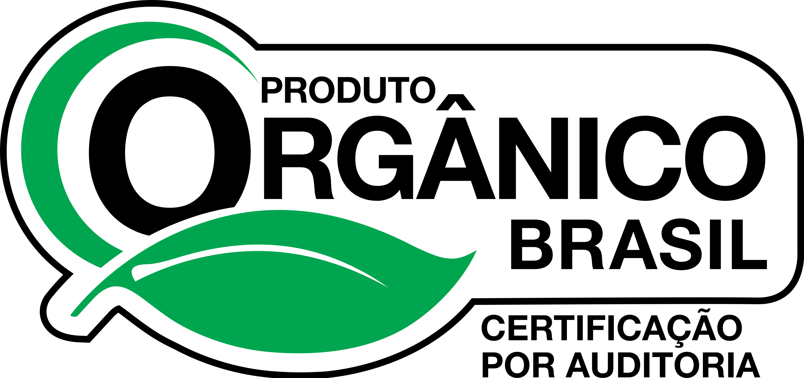
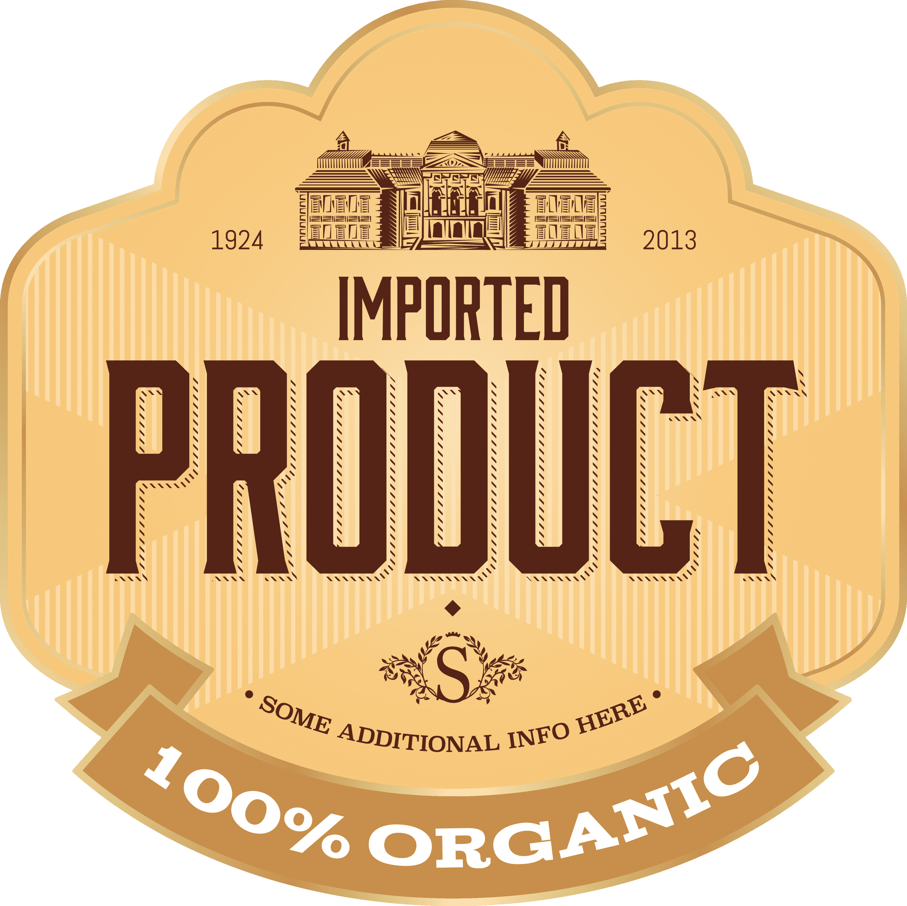

Sobre a Loja
Bem-vindos à Antico Pão, a padaria artesanal que traz até você o sabor autêntico e a tradição do pão feito à moda antiga. Nossa missão é resgatar o prazer de apreciar pães artesanais de qualidade, elaborados com ingredientes selecionados e técnicas ancestrais de panificação.
Na Antico Pão, cada pão é um trabalho de amor e dedicação. Nossos padeiros habilidosos amassam e moldam a massa à mão, permitindo que ela repouse e fermente naturalmente, desenvolvendo aromas e sabores únicos. Assim, entregamos pães crocantes por fora e macios por dentro, que fazem você viajar no tempo e experimentar o verdadeiro sabor da tradição.
Além dos pães tradicionais, oferecemos uma variedade de produtos artesanais para satisfazer os paladares mais exigentes. Nossos croissants delicadamente folhados, os doces tentadores e os bolos irresistíveis são preparados com a mesma paixão e atenção aos detalhes. Visite-nos e embarque nessa experiência gastronômica que celebra a autenticidade e o prazer de saborear um pão verdadeiramente especial.
- 


- 